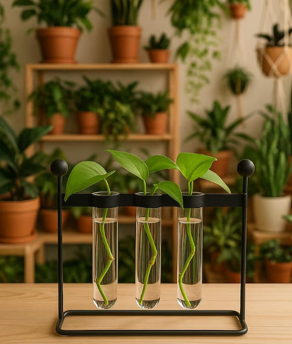

The Joy and Science of Indoor Gardening
Urban Botany Case Study
Integrating biological life support vectors inside dense urban living quarters provides quantifiable improvements to spatial atmospheric chemistry as well as focus optimization layers.

1. Spatial Air Purification Matrix
Botany lines like *Sansevieria trifasciata* (Snake Plant) serve as highly resilient structural bio-filters, absorbing common industrial airborne compounds and steadily balancing oxygen cycles inside standard concrete rooms.
2. Cognitive Recovery Baseline
Managing indoor plant life establishes a calming baseline routine that drops standard operational stress indices and enhances high-level structural problem-solving endurance.
"Begin your implementation with low-moisture succulents to establish clean operational checks!"